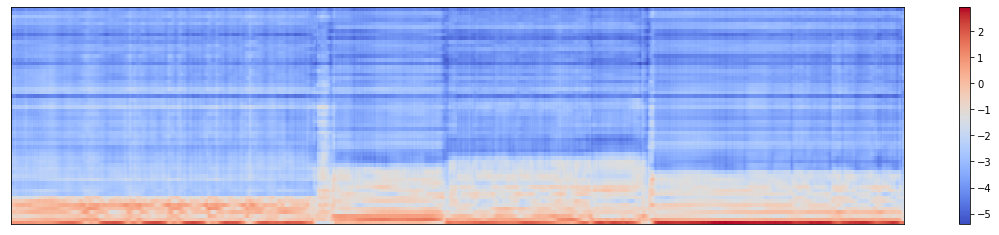
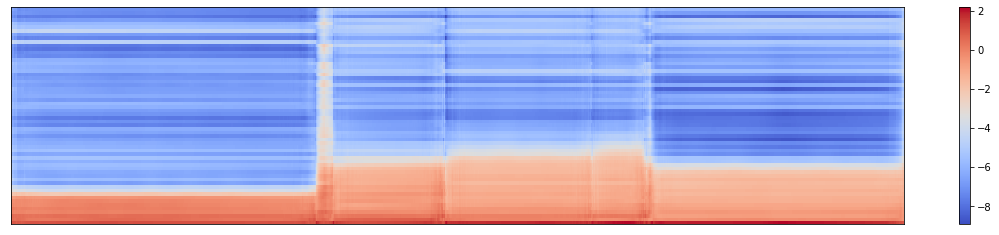
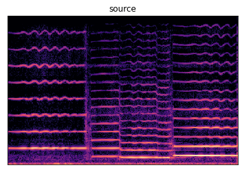
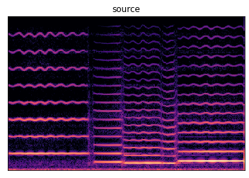
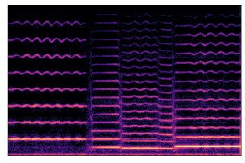
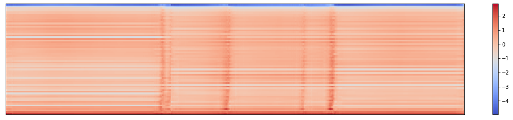
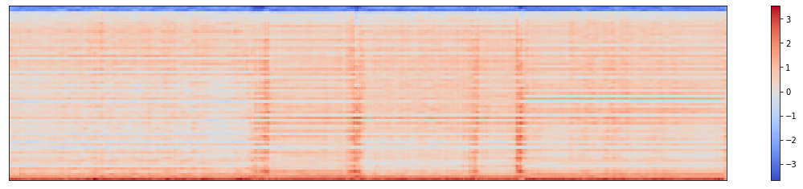

Back to Main Page
GAN Improvement
Here we present the improvement between without and with GAN in the proposed model. Without GAN, the model will suffer from "over-smoothing" problem, where the model generates uniform and smoothed harmonic distribution and noise magnitudes over the whole note. See below for an intuitive evaluation.
Ground-truth Harmonic Distribution
Predicted Harmonic Distribution without GAN
With the introduction of adversarial training, the proposed model overcomes the over-smoothing problem potentially caused by one-to-many mapping.
Predicted Harmonic Distribution with GAN

One can also hear the over smoothing problem from predicted samples:
| Ground-truth | With GAN | Without GAN |
|---|---|---|
Ground-truth
Without GAN
With GAN
Similar effects can also be seen in noise magnitudes:
Ground-truth Noise Magnitudes

Predicted Noise Magnitudes without GAN
Predicted Noise Magnitudes with GAN
